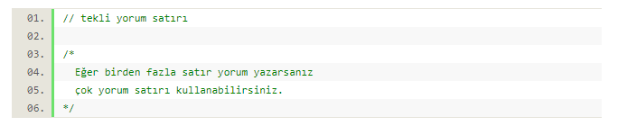
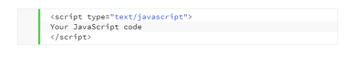

JavaScript’in yazılım kurallarının (Syntax) çoğu JAVA programlamaya benzer ancak JavaScript aynı zamanda Perl ve Python’dan da etkilenir. JavaScript
karakter kümesi olarak Unicode (Evrensel Kod) Unicode Consortium organizasyonu tarafından geliştirilen ve her karaktere bir sayı değeri karşılığı atayan
bir endüstri standardıdır. karakter kümesi kullanılır. Fakat, bu her Unicode kodlamasının bir endüstri standardıdır. karakter kümesi kullanılır. Fakat,
bu her Unicode kodlamasının Karakterin “Glyph” (Kılıf) ad verilen görüntüsünün de belge çözümleyicinin içinde tanımlanmış olması gerekmektedir.
Doğal olarak bu olasılık az kullanılan arkaik diller için geçerlidir. Batı dillerine ait tüm karakterler sorunsuzca görüntülenecektir. Diğer dillerinde karakter
kodları çözümleyicilere eklenmeye devam etmektedir.
JavaScript programlama dilinde Unicode karakterlerinin desteklenmesi, JavaScript programlarında, değişken isimler, fonksiyon isimleri gibi kullanıcı
tanımlı her değişken ve nesnenin Türkçe isimlerle tanıtılıp çağırılabileceği anlamına gelir. Bu yerel olarak programın anlaşılabilirliliğini arttırır, fakat
uluslararası ortamlarda, yerel diller ile yazılmış programların anlaşılabilililiği oldukça azalır.
JavaScript dilinde alfanumeric değişkenler ve düzenli ifadeler (RegExp) gereği olmadıkça, her türlü boşluk, satır aralığı ve tab karakterlerini göz ardı eder.
Bu nedenle, kendimiz için en anlamlı kod düzenlemelerini yaparak, program yazım konforuna sahip oluruz. JavaScript programlama dili,
Algol/Pascal/ADA serbest yazım formunu aynen destekler. Yazım yöntemi çok esnek olmasına karşın, alışkanlıktan kaynaklanan belirli kalıplar içinde
kalmanın oldukça yararı vardır. Çünkü yazılmış olan kodun veya kod bloğunun ileride bakımı için bize büyük kolaylıklar sağlayacaktır. JavaScript
programlama dilinde, bazı program dillerinde olduğu gibi, blok içinde alınmış kodlar, yeni bir kapsam alanı yaratmazlar. JavaScript yorumlayıcısı, bildirim
bekleyen if gibi program öğelerine tek bildirim yerine birden çok bildirim belirtilmesi için çalıştırılacak bildirimlerin bir bildirim bloğu { } içine alınmasını
öngörmüştür. Bildirim bloğunda kullanılacak program adımları bellidir ve bunlarda kullanılacak bildirim bloğu { }’nun amacı, içeriğine yeni
bir kapsam açmak değil, içeriği olan bildirimlerin sıra ile çalıştırılmasını sağlamaktır.
JavaScript’te bütün değikenler harf, alt çizgi veya ( _ veya altbağlaç ) veya dolar ( $ ) işareti ile başlar. Rakamlar ve diğer karakterler bu üç karakterden
sonra kullanılır.Değişkenler $ işareti ile başlatılabilmesine karşın güncel kullanımda bu olanak sadece makine tarafından oluşturulan otomatik JavaScript
kodlarına bırakılmaktadır. Yani insanlar tarafından oluşturulan kodlarda, önleyici hiç bir kural olmamasına karşın, değişken isimlerinde $ karakteri pek
kullanılmamaktadır.JavaScript büyük küçük harf duyarlıdır (Case Sensitive). Yani aynı isimde hem büyük harfle hemde küçük harfle değişken oluşturursanız
JavaScript bu iki değişkeni ayrı ayrı 7/24 açık bir web sitesi, özellikle bir e-ticaret sitesi ise günün her saatinde satış yapması demektir. Satış ve pazarlama
gelirinin artması, reklam ve kampanya giderlerinin düşmesi profesyonel bir web tasarımı ile mümkündür.
Javascript’te yorum satırı ekme tıpkı C++ ve diğer dillerde olduğu gibidir. Programcıların yazmış oldukları kodları açıklamak için kullandığı ve kodun içinde
yazdıkları kimi zaman çok büyük olan metinlerdir. Gerek fonksiyonlarda gerekse değişkenlerde yorum veya açıklama satırı kullanılarak fonksiyonun veya
değişkenin ne tür iş yaptığını veya ne tür bir çıktı verdiğini belirtilir. Tek satır açıklama yazmak için satırın başına // metin yazmanı yeterliyken birden
fazla satırlı yorum veya açıklama yazmak için metninizi /* metin */ şeklinde yazmalısınız. Yorumlar ve açıklama satırları yorumlayıcılar (interpreter)
tarafından dikkate alınmaz. Dolayısıyla sisteminize de herhangi bir işlem yükü getirmeyecektir. Programcılar yazmış oldukları fonksiyonları ve değişkenleri
daha sonra hatırlamak veya başkalarının da rahat bir şekilde okuyabilmeleri için yorum ve açıklama satırlarına önem verirler.
Bir web sayfasına JavaScript kodu ekleyebilmek için script etiketi kullanmalısınız. Aşağıdaki örneği kullanarak pratikte bunun neye benzediğini görebilirsiniz:
